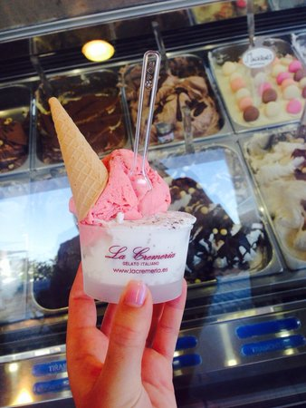
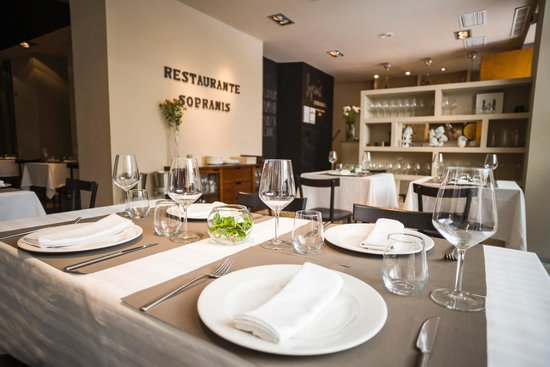
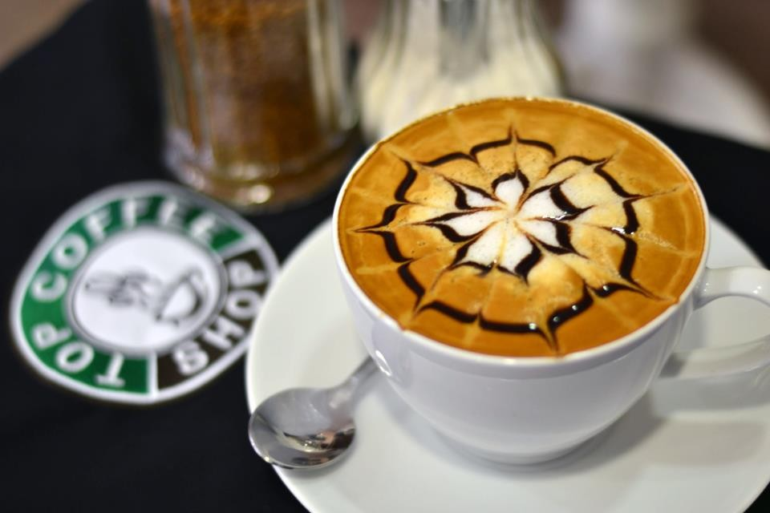

Lugares gastronómicos
La Cremeria Gelato Italiano

La Cremeria garantiza a sus consumidores un producto fresco, recién hecho y enteramente artesanal obteniendo un helado cuyo sabor, textura y estructura sea único para el paladar.
Un helado sano y natural, sin colorantes ni conservantes.
Restaurante Sopranis

El nuevo Restaurante Sopranis es una propuesta gastronómica fresca y diferente, diseñada para que nuestros clientes pasen un buen rato y se diviertan en un ambiente relajado y tranquilo. Un espacio que conforman El Restaurante Sopranis y el Tapas-Bar La Esquina de Sopranis (La barra), en los que expresamos nuestra pasión por la gastronomía,la cocina y todo el mundo que la rodea. Los aromas y sabores “de toda la vida” constituyen una parte importante de nuestra identidad, un patrimonio a preservar al que añadimos un ingrediente necesario; un espíritu inquieto que nos mueve a descubrir nuevas sensaciones La diversidad de nuestra tierra nos proporciona los ingredientes básicos para la preparación de una oferta con personalidad propia . Una materia prima excepcional y un esmerado tratamiento hace posible que en Sopranis pueda disfrutar de una buena mesa.
Top Coffe Shop

La cafetería de nueva generación para Coffee Lovers
Visítanos para desayunar, tomar un café o pasar un buen rato tomando uno de nuestros zumos naturales o batidos. Venir a nuestro local siempre es una nueva experiencia. Póngase cómodo en compañía de amigos o familiares y disfrute de esta sabia combinación entre la gran oferta de bebidas y bollería americana de TOP COFFEE SHOP & JUICE BAR.
La simpatía del servicio forma parte del encanto.
El equipo de TOPCOFFEESHOP espera su visita.